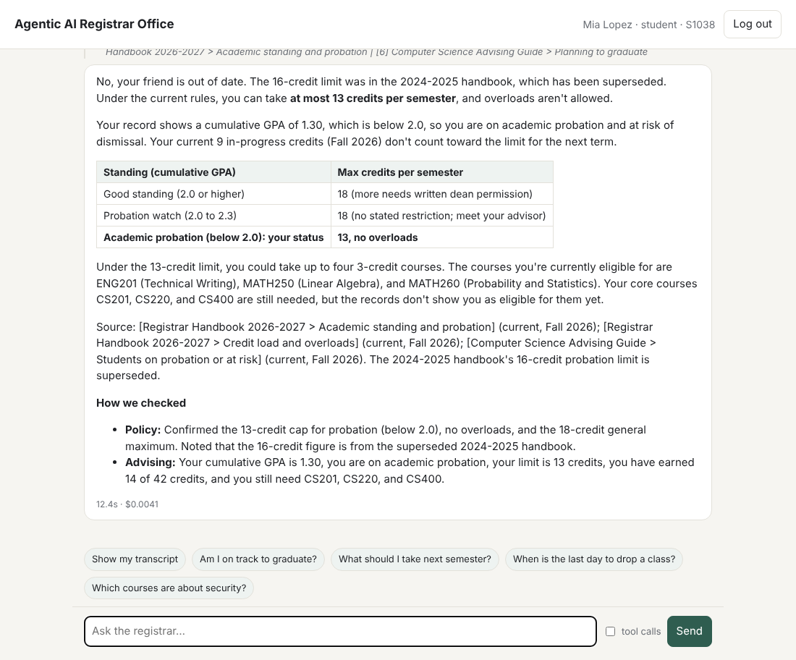

Our system is a multi-agent registrar office: a Registrar coordinator agent routes each request to specialist agents (Records, Registration, Analytics, Advising) that work on a student database through tools. For this assignment we added Retrieval-Augmented Generation (RAG): a knowledge base of the registrar's documents (handbook, course catalog, advising guide), a hybrid retriever (BM25 keyword search + embedding search), and a new Policy agent that answers from the retrieved passages with citations. The Advising agent and the enrollment workflow also use retrieval.
Following Chapter 14, the Policy agent applies Agentic RAG: it judges the retrieved passages, prefers current rules over a superseded handbook, searches again with new wording when results are poor, and says so when the documents do not cover a question instead of guessing.
Chapter 14 starts from the static-training limitation: a language model only knows what it saw in training. A registrar's knowledge is the opposite of that: it is institution-specific (this university's credit limits, probation rules, course descriptions), time-bound (Spring 2027 deadlines did not exist when the model was trained) and changes between editions (the 2026-2027 handbook replaced the 2024-2025 one). Without retrieval, the agents could only enforce the rules written into code; they could not explain them, quote them, or answer "when is the last day to drop?". RAG turns the agents from closed-book into open-book: they look the answer up in the university's own documents and cite where it came from.
We keep a clear division of labor: the code enforces the rules (the service layer refuses a 14-credit load for a student on probation) and RAG explains them (the agent quotes the handbook section that sets the 13-credit limit). A test checks that the handbook states the same numbers the code enforces, so the two can never drift apart.
search_knowledge. Database agents keep using the service layer, which enforces the same rules the documents describe.RAG is used in four places:
| Document | Status | Chunks | Contents |
|---|---|---|---|
| Registrar Handbook 2026-2027 | current | 10 | Registration periods, Spring 2027 deadlines, credit load and overloads, academic standing and probation, prerequisites, repeating courses, grading and GPA, time conflicts and seats, graduation, records privacy (FERPA) |
| Registrar Handbook 2024-2025 | superseded | 4 | Older rules that conflict with the current ones (19-credit limit, 16 credits on probation, grades averaged on repeats, D counts for prerequisites). Kept on purpose to test conflict handling. |
| Course Catalog 2026-2027 | current | 22 | One description per course, with credits, prerequisites and instructor (NMSU CS faculty) |
| CS Advising Guide | current | 5 | Recommended sequence, electives by interest, advice for students on probation, graduation planning, when to contact the office |
The rules follow NMSU's catalog where we could confirm them (12-18 credit full-time load, overloads need written permission, 13-credit limit on academic probation, repeats allowed after a D or F) and common university policy elsewhere. Each document starts with metadata: title, effective date, status (current or superseded) and, for the old handbook, which edition replaced it.
registrar/rag.py)knowledge/ and read their metadata.## section becomes one chunk, because each section answers one kind of question (Chapter 14: "a 50-page manual becomes separate chunks per section"). Sections over 1,200 characters would be split by paragraph; none are that long, so the 41 chunks range from 116 to 667 characters (median 245). Every chunk keeps its document, section title, effective date and status.potion-retrieval-32M, a small static embedding model (512 dimensions) tuned for retrieval. It runs locally on a laptop, needs no API key, and downloads once (about 130 MB). The section title is embedded with the text, as a header would be.data/rag_index.npz and rebuilt automatically when a document or the model changes. With 41 chunks an exact search is instant; at a larger scale this matrix would move to a vector database (FAISS, Chroma, pgvector), as the slides describe.The search_knowledge tool returns a SOURCES line followed by each passage with its citation, effective date, status and both scores. The agent writes its answer from these passages only and cites them in square brackets. A shortened tool result:
Retrieved 4 chunks (hybrid search) for: 'probation credit limit' SOURCES: [1] Registrar Handbook 2026-2027 > Academic standing and probation | [2] Computer Science Advising Guide > Students on probation or at risk | [3] Registrar Handbook 2026-2027 > Credit load and overloads | [4] Registrar Handbook 2024-2025 > Academic standing and probation [1] Registrar Handbook 2026-2027 > Academic standing and probation | effective Fall 2026 | CURRENT | semantic 0.43, keyword 3.59 ... Academic probation: cumulative GPA below 2.0. The student is at risk of dismissal and may register for at most 13 credits per semester. ... (passages 2 and 3 omitted) [4] Registrar Handbook 2024-2025 > Academic standing and probation | effective Fall 2024 | SUPERSEDED (replaced by Registrar Handbook 2026-2027) | semantic 0.39, keyword 3.55 ... Students with a cumulative GPA below 2.0 are placed on academic probation and may register for at most 16 credits per semester.
Standard RAG retrieves and injects. Chapter 14's Agentic RAG adds an agent that interrogates what was retrieved. The Policy agent's instructions require it to:
Conflict reconciliation. "A friend told me students on probation can take up to 16 credits. Is that right?" The Policy agent retrieved both handbooks, recognized the 16-credit rule as the superseded 2024 edition, and answered:
No, that's out of date. A student on academic probation can take at most 13 credits per semester in the current rules (Fall 2026). The 16-credit limit came from the 2024-2025 handbook, which has been superseded. Source: [Registrar Handbook 2026-2027 > Academic standing and probation, effective Fall 2026, current]
Knowledge-gap detection. "How much does a parking permit cost on campus?" The first search returned NO RELEVANT DOCUMENTS; the agent searched once more with other wording, judged those passages irrelevant too, and answered that the registrar's documents don't cover parking fees, suggesting the Registrar or parking office. It did not invent a price.
Explaining a refused enrollment. "Enroll me in Operating Systems (CS301) for Spring 2027." The Records agent found the prerequisite CS210 not taken; the chain stopped, and the Policy agent retrieved the rule:
Rule behind this (Registrar Handbook 2026-2027 > Prerequisites): "A prerequisite counts only after it is completed with a grade of C- or better. Courses still in progress do not count... Students who believe a prerequisite should be waived may petition the department head; the online assistant cannot grant prerequisite overrides."
Combining retrieval with records. For student S1038 (GPA 1.30) asking the same probation question in the web app, the Registrar ran the Policy agent and the Advising agent in parallel: the answer quoted the current 13-credit rule and applied it to the student's own record.

rag_eval.py measures retrieval on 30 questions written the way students ask them (24 paraphrased, 6 with exact terms or course codes), each labeled with the section(s) that answer it, plus 5 off-topic questions the documents don't cover. No language model is involved, so it is free and repeatable.
| Retrieval mode | Recall@1 | Recall@3 | MRR |
|---|---|---|---|
| Keyword (BM25) | 70% | 87% | 0.80 |
| Vector (embeddings) | 73% | 80% | 0.79 |
| Hybrid (RRF) — used | 70% | 87% | 0.80 |
Recall@k is the share of questions whose answer is in the top k chunks; MRR is the mean of 1/rank of the first correct chunk. Vector search is best at ranking paraphrased questions first, keyword search is better on course codes and exact terms, and hybrid keeps keyword search's top-3 recall. The knowledge-gap check rejected 4 of 5 off-topic questions and 0 of 30 answerable ones.
| Model | Dims | Vector R@3 | Hybrid R@3 | Hybrid MRR | Off-topic rejected |
|---|---|---|---|---|---|
| potion-base-8M | 256 | 73% | 87% | 0.75 | 0 / 5 |
| potion-base-32M | 512 | 80% | 87% | 0.78 | 1 / 5 |
| potion-retrieval-32M (used) | 512 | 80% | 87% | 0.80 | 4 / 5 |
Two lessons. First, hybrid search matters most when embeddings are weak: with the smallest model, vector search alone reached 73% recall@3 and hybrid raised it to 87%. Second, the retrieval-tuned model separates on-topic from off-topic questions far better (off-topic similarity at most 0.20), which is what makes the knowledge-gap check work.
Hybrid retrieval misses 4 questions in the top 3. "I failed a class, can I retake it?" ranks the probation advice first (which also talks about repeating failed courses) because "retake" never appears in the handbook. "When does the spring semester start?" ranks "Registration periods" above the calendar. These are the cases where the agent layer helps: the Policy agent searches again with different wording, and in the live run it found the "Repeating a course" section and quoted it.
| Chapter 14 concept | In our system |
|---|---|
| Static-training limitation | Handbook rules, Spring 2027 deadlines and course descriptions are retrieved, not assumed |
| Chunking | One chunk per section with metadata; 41 chunks, median 245 characters |
| Embeddings and semantic similarity | potion-retrieval-32M, cosine similarity; "protecting computers from hackers" → Computer Security |
| BM25, vector and hybrid search | All three implemented and compared; hybrid with reciprocal rank fusion is the default |
| Vector database | NumPy index cached on disk (exact search); FAISS/Chroma/pgvector would replace it at scale |
| Retrieval trade-offs | Top-k = 4, a relevance threshold, metadata (effective date, status) on every chunk |
| Citations and reduced hallucination | Every fact cited as [document > section]; answers only from retrieved text |
| Agentic RAG: source validation, conflict reconciliation | Superseded 2024 handbook detected and overruled by the current edition |
| Agentic RAG: multi-step decomposition | Multi-part questions searched part by part; rephrased search when results are poor |
| Agentic RAG: knowledge-gap detection | "NO RELEVANT DOCUMENTS" check; the agent declines to guess |
| GraphRAG | Not used for documents. The prerequisite chain is already a graph (courses linked by prerequisites) that the database tools traverse; a GraphRAG version is listed as future work |
.venv\Scripts\python rag_eval.py # retrieval evaluation table (free, no Claude calls) .venv\Scripts\python -m pytest -q # 33 tests, including 8 for RAG .venv\Scripts\python main.py --role student --id S1038 -v -q "Can students on probation take 16 credits?"
The RAG tests check chunking and metadata, that the course catalog matches the database (credits, prerequisites, instructors), that the handbook states the same limits the code enforces, retrieval quality on the evaluation set, semantic matching, the knowledge-gap check, labeling of superseded passages, and the keyword-only fallback.